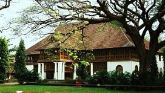
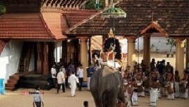

- 


- 
THIRUVANANTHAPURAM
The capital city of Kerala, Thiruvananthapuram or Trivandrum, is an appealing blend of a strongly rooted heritage and a nostalgic colonial legacy. Built upon seven hills, this city has long since left the days when it was only used by seafaring explorers behind - today, Trivandrum is an expensive metropolis with quaint urban charm and plenty of architectural and historical places to visit. In addition, Trivandrum is a gateway to nearby popular beach towns of Kovalam and Varkala.